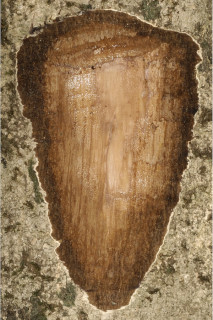
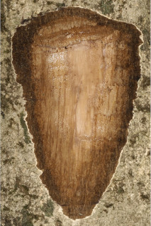
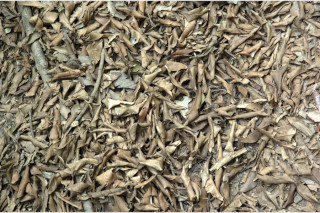
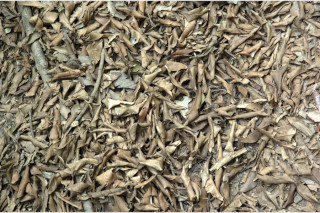

Lofty buttressed trees, up to 60 m tall.
60 ಮೀ. ಎತ್ತರದವರೆಗೆ ಬೆಳೆಯುವ, ಆನಿಕೆ ಬೇರುಗಳನ್ನೊಳಗೊಂಡ ಬೃಹತ್ ಗಾತ್ರದ ಮರಗಳು.
Lofty buttressed trees, up to 60 m tall.
மிகப்பெரிய மரம் தாங்கு வேர்களுடையவை (பட்ரஸ்டு), 60 மீ. உயரம் வரை வளரக்கூடியது.
Bark white or pale grey, usually cracked in irregular flakes; blaze brown.
ತೊಗಟೆ ಬಿಳಿ ಅಥವಾ ತೆಳು ಸಾಮಾನ್ಯವಾಗಿ ಅನಿಯತವಾಗಿ ಬಿರುಕುಗೊಂಡ ಚಕ್ಕೆ ಸಮೇತವಾಗಿರುತ್ತವೆ; ಕಚ್ಚು ಮಾಡಿದ ಜಾಗ ಕಂದು ಬಣ್ಣದಲ್ಲಿರುತ್ತದೆ.
Bark white or pale grey, usually cracked in irregular flakes; blaze brown.
மரத்தின் பட்டை வெள்ளை நிறமானது அல்லது வெளிறிய சாம்பல் நிறமானது, பொரும்பாலும் ஒழுங்கற்ற செதில்களாக உதிருபவை; உள்பட்டை ப்ரவுன் நிறமானது.
Young branchlets subterete to slightly quadrangular, glabrous.
ಎಳೆಯ ಕಿರುಕೊಂಬೆಗಳು ಉಪದುಂಡಾದರಿಂದ ಕೊಂಚ 4-ಕೋನಯುಕ್ತವರೆಗಿನ ಮಾದರಿಯಲ್ಲಿರುತ್ತವೆ ಮತ್ತು ರೋಮರಹಿತವಾಗಿರುತ್ತವೆ.
Young branchlets subterete to slightly quadrangular, glabrous.
சிறியநுனிக்கிளைகள் குறுக்குவெட்டுத் தோற்றத்தில் வளையமானது முதல் சிறிது நான்கு கோணங்களுடையது, உரோமங்களற்றது.
Leaves simple, opposite, decussate; petiole 0.4-1.3 cm long, canaliculate, glabrous; lamina 5-10 x 2.5-4 cm, elliptic (linear in young seedling and later becomes narrow oblong), apex caudate or caudate - acuminate, (acumen 0.8-1.8 cm long), base acute or attenuate, margin entire, chartaceous, glabrous, pellucid gland dotted, leaves pink when young; midrib canaliculate; intramarginal nerve present; secondary_nerves closely parallel; tertiary veins slender, admedially ramified.
ಎಲೆಗಳು ಸರಳವಾಗಿದ್ದು ಅಭಿಮುಖವಾಗಿ ಜೋಡನೆಗೊಂಡಿದ್ದು ಕಾಂಡದ ಎರಡೂ ಕಡೆ ಎದುರು ಬದರಿನ ಲಂಬ ಸಾಲಿನಲ್ಲಿರುತ್ತವೆ; ತೊಟ್ಟುಗಳು 0.4 – 1.3 ಸೆಂ.ಮೀ. ವರೆಗಿನ ಉದ್ದಹೊಂದಿದ್ದು ಕಾಲುವೆಗೆರೆ ಸಮೇತವಿರುತ್ತವೆ ಮತ್ತುರೋಮರಹಿತವಾಗಿರುತ್ತವೆ;ಪತ್ರಗಳು5 –10 X 2.5 – 4 ಸೆಂ.ಮೀ.ವರೆಗಿನ ಗಾತ್ರವಿದ್ದು ಅಂಡವೃತ್ತದ ಆಕಾರ (ಎಳೆಯ ಸಸಿಗಳಲ್ಲಿ ರೇಖಾತ್ಮಕವಾಗಿದ್ದು ನಂತರ ಸಂಕುಚಿತ ಚತುರಸ್ರವಾಗುತ್ತವೆ),ಬಾಲರೂಪಿ ಅಥವಾ ಕ್ರಮೇಣ ಚೂಪಾಗುವ ತುದಿ, ಚೂಪಾದುದರಿಂದ ಹಿಡಿದು ಒಳಬಾಗಿದ ಮಾದರಿವರೆಗಿನ ಬುಡ,ನಯವಾದ ಅಂಚು,ಪ್ರಕಾಶ ಭೇಧ್ಯ ರಸಗ್ರಂಥಿ ಚುಕ್ಕೆಗಳ ಸಮೇತವಿದ್ದು ಕಾಗದವನ್ನೋಲುವ ಮೇಲ್ಮೈ ಹೊಂದಿದ್ದು ರೋಮರಹಿತವಾಗಿರುತ್ತವೆ,ಎಲೆಗಳು ಎಳೆಯದಾಗಿದ್ದಾಗ ನಸುಗೆಂಪು ಬಣ್ಣದಲ್ಲಿರುತ್ತವೆ;ಮಧ್ಯ ನಾಳ ಪತ್ರದ ಮೇಲ್ಭಾಗದಲ್ಲಿ ಕಾಲುವೆಗೆರೆ ಸಮೇತವಿರುತ್ತದೆ; ಅಂಚಿನ ನಾಳಗಳು ಇರುತ್ತವೆ; ಎರಡನೇ ದರ್ಜೆಯ ನಾಳಗಳು ಅನೇಕವಿದ್ದು ಹತ್ತಿರವಾಗಿರುತ್ತವೆ ಹಾಗೂ ಸಮಾಂತರದಲ್ಲಿರುತ್ತವೆ ;ಮೂರನೇ ದರ್ಜೆಯ ನಾಳಗಳು ತೆಳುವಾಗಿದ್ದು ಎಲೆಯ ಅಕ್ಷದ ಕಡೆಗೆ ಕವಲುಗೊಂಡಿರುತ್ತವೆ.
Leaves simple, opposite, decussate; petiole 0.4-1.3 cm long, canaliculate, glabrous; lamina 5-10 x 2.5-4 cm, elliptic (linear in young seedling and later becomes narrow oblong), apex caudate or caudate - acuminate, (acumen 0.8-1.8 cm long), base acute or attenuate, margin entire, chartaceous, glabrous, pellucid gland dotted, leaves pink when young; midrib canaliculate; intramarginal nerve present; secondary_nerves closely parallel; tertiary veins slender, admedially ramified.
இலைகள் தனித்தவை, எதிரடுக்கமானவை, குறுக்குமறுக்கானவை; இலைக்காம்பு 0.4-1.3 செ.மீ. நீளமானது, குறுக்குவெட்டுத் தோற்றத்தில் கேனாலிகுலேட், உரோமங்களற்றது; இலை அலகு 5-10 X 2.5-4 செ.மீ., நீள்வட்ட வடிவானது (இளம்பருவத்தில் கோட்டு வடிவானது பிறகு குறுகிய நீள்சதுர வடிவானது), அலகின் நுனி வால் போன்றது அல்லது வால்-அதிக்கூரியது, (முனை 0.8-1.8 செ.மீ. நீளமானது), அலகின் தளம் கூரியது அல்லது அட்டனுவேட், அலகின் விளிம்பு முழுமையானது, சார்ட்டேசியஸ், உரோமங்களற்றது, ஒளிபுகும் சுரப்பி புள்ளிகளுடையது, இளம்பருவத்தில் இலைகள் பிங்க் நிறமானது; மையநரம்பு மேற்புறத்தில் அலகின் பரப்பைவிட பள்ளமானது; விளிம்பு நரம்பு (இண்ட்ராமார்ஜினல் நரம்பு) கொண்டது; இரண்டாம் நிலை நரம்புகள் நெருக்கமான இணையானவை; மூன்றாம் நிலை நரம்புகள் மெல்லியது, ஆட்மீடியல்லி ராமிபைடு.
Inflorescence corymbose cyme, terminal; flowers white.
ಪುಷ್ಪಮಂಜರಿ ತುದಿಯಲ್ಲಿನ ಮಧ್ಯಾರಂಭಿ ನೀಳಛತ್ರ ಮಾದರಿಯಲ್ಲಿರುತ್ತವೆ;ಹೂಗಳು ಬಿಳಿ ಬಣ್ಣದಲ್ಲಿರುತ್ತವೆ.
Inflorescence corymbose cyme, terminal; flowers white.
மஞ்சரி கோரியம்போஸ் சைம் வகை மஞ்சரி, தண்டின் நுனியில் காணப்படும்; மலர்கள் வெள்ளை நிறமானது.
Berry subglobose, crowned by persistent calyx, purple; seed one.
ಬೆರ್ರಿ ಫಲಗಳು ಉಪಗೋಳಾಕಾರದ ಆಕಾರದಲ್ಲಿದ್ದು ಮುಕುಟದಲ್ಲಿ ಶಾಶ್ವತವಾಗಿ ಉಳಿಯುವ ಪುಷ್ಪಪಾತ್ರೆಯ ಸಮೇತವಿರುತ್ತವೆ ಮತ್ತು ಕೆನ್ನೀಲಿ ಬಣ್ಣ ಹೊಂದಿರುತ್ತವೆ;ಬೀಜ ಒಂದು
Berry subglobose, crowned by persistent calyx, purple; seed one.
முழுச்சதைகனி (பெர்ரி) கோளவடிவானது, நிரந்தரமான புல்லி இதழ்களுடையவை, பர்புள்; ஒரு விதையுள்ள கனி.

 



 
